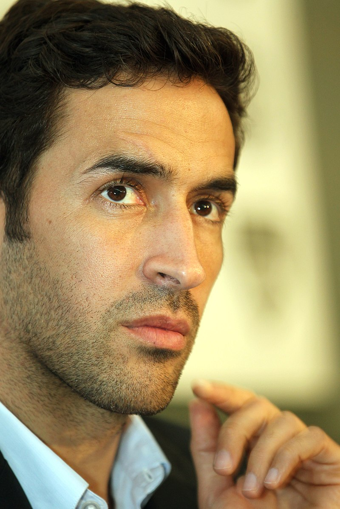

Raúl González - fotbalist
Madrid este capitala si cel mai populat oras al Spaniei. Este al doilea cel mai mare oras al
Uniunii Europene, depasit doar de Berlin. Provenind din latinescul "Matrix" (curgere de apa), Madrid se
afla pe raul Manzanares si este sediul Guvernului, dar si resedinta monarhului spaniol.
Datorita productiei sale economice si a dimensiunii mari a pietei, Madrid este considerat un centru financiar major si principalul hub economic al Peninsulei Iberice si al Europei de Sud. Acesta gazduieste sediile principale din marea majoritate a marilor companii spaniole, precum Telefónica, IAG sau Repsol.
Desi Madrid poseda o infrastructura moderna, metropola a pastrat aspectul multor cartiere si strazi istorice, reflectand numeroase stiluri din diferite epoci istorice - Plaza Mayor sau Palatul Cibeles sunt repere monumentale ale metropolei. In fiecare an, peste 10 milioane de oameni viziteaza capitala spaniola, fascinati de peisajul urban si de magia acestui oras plin de viata.
Un muzeu cu adevarat de talie mondiala, Muzeul Prado are o colectie de peste 5000 de tablouri care rivalizeaza cu colectia de la Louvru. Picturile spaniole din secolul 13 pana la inceputul secolului 19 formeaza majoritatea colectiei, iar multe sunt capodopere celebre. Sortimentul de tablouri de Francisco de Goya include o remarcabila serie de 140 de lucrari.
Colectia acopera, de asemenea, picturi italiene, flamande, franceze, britanice si germane, precum si sculpturi italiene neoclasice. Muzeul Prado prezinta in jur de 2300 de piese din colectie in peste 100 de camere.
Incercarea de a vedea totul intr-o singura vizita poate fi descurajanta, insa te poti concentra pe un anumit itinerar al capodoperelor. Exista trasee autoghidate ale unor lucrari specifice. Aceste rute prezinta cele mai renumite piese din colectie, inclusiv faimosul tablou din Prado, Las Meninas. Aceasta pictura magnifica a familiei regale a lui Felipe al IV-lea a fost creata de Velázquez in 1656. Alte lucrari care trebuie neaparat vazute sunt Buna Vestire de Fra Angelo sau Adorarea pastorilor de El Greco.
Grandiosul Palat Regal este versiunea spaniola a Versailles, o cladire roiala menita sa
impresioneze. Inaltandu-se deasupra unei pante abrupte cu vedere la gradinile luxuriante, palatul este construit
in intregime din granit si piatra alba Colmenar. Palatul a fost comandat de Filip al V-lea in secolul al
18-lea.
Cea mai marcanta caracteristica a interiorului este scara impozanta din holul de la intrare, cu o fresca a Triumfului Religiei si a Bisericii, care duce pana la etajul principal. Apartamentele regelui Charles al III-lea sunt printre camerele frumoase din palat. Salón del Trono (Sala Tronului) este impodobita cu fresce de Tiepolo si decorata cu tapiserii, oglinzi, mobilier si candelabre valoroase.
De-a lungul palatului, capodoperele de arta decoreaza peretii: picturi de Velázquez, Goya, Rubens, El Greco si Caravaggio, sau rafinate tapiserii flamande si franceze. In spatele palatului se afla Gradinile Sabatini, un loc perfect pentru plimbari linistite, cu garduri vii, fantani, statui si o piscina.
Parcul Buen Retiro (Parque del Retiro) este o oaza de pace in inima Madridului. Dincolo de strazile aglomerate, acest parc luxuriant de 120 de hectare ofera o evadare din agitatia orasului. Creat pentru Contele-Duce de Olivares in secolul al 17-lea, parcul istoric are o atmosfera eleganta cu peisajele sale minunate.
De la intrarea principala de la Plaza de Independecia, vizitatorii ajuns la piscina din centrul parcului. De aici, caile duc la fermecatoarele Rosaleda (Gradina Trandafirilor) si Jardín de Don Cecilio, in stil formal frantuzesc.
Palatul de cristal, un loc splendid, cu fantana sa gratioasa si piscina reflectanta, gazduieste adesea expozitii de arta. Vizitatorii vor gasi alte fantani interesante, printre care Los Galápagos (Testoasele), El Ángel Caído (Ingerul cazut) si La Alcachofa (Anghinarea).
Piata Puerta del Sol a fost numita dupa emblema soarelui de pe vechea poarta a orasului, care anterior statea aici. Aceasta piata spatioasa a orasului se aliniaza cu soarele la rasarit. Pe langa faptul ca este un nod al transportului public (cu multe statii de autobuz si intrari in metrou), Puerta del Sol este, de asemenea, "Kilometrul Zero" de la care sunt masurate toate distantele de pe reteaua de drumuri nationale spaniole.
Puerta del Sol a fost scena multor evenimente istorice, inclusiv rezistenta spaniola in fata lui Napoleon la 2 mai 1808, iar in 1931, a doua republica a fost proclamata aici.
In zilele noastre, piata este un loc unde sa stai si sa te bucuri de viata. Plina de magazine si cafenele, Puerta del Sol este inca una dintre cele mai vii piete din Madrid. Poti asista intamplator si la spectacolele unor muzicieni foarte talentati.
Nu toate atractiile turistice din Madrid graviteaza in jurul artei. Unul dintre cele mai vizitate muzee atrage fanii fotbalului pe Estadio Santiago Bernabeu stadionul echipei Real Madrid, una dintre cele mai importante echipe ale orasului. Alaturi de trofeele expuse, artefactele echipei si ecranele interactive din muzeu, un tur include stadionul masiv in sine. Montajele foto permit fanilor sa-si faca poze cu jucatorii preferati. Alte echipe din oras sunt Atletico Madrid, Getafe, Leganes si Rayo Vallecano
Personalitati notabile din Madrid